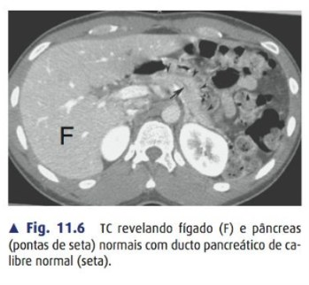

Nódulos hepáticos (hemangioma × HNF × adenoma × CHC) · abscesso hepático (piogênico × amebiano) · hipertensão portal (Baveno VII, varizes, TIPS) · anatomia segmentar de Couinaud. Base: ACG 2024 (Focal Liver Lesions), EASL (tumores benignos), Baveno VII 2022, e pegadinhas das bancas do RS.
Baseada na distribuição dos ramos portais e nas veias hepáticas (que correm entre os segmentos, marcando os planos de divisão), não na anatomia externa (lobos direito/esquerdo pela fissura umbilical). (o fígado é dividido em 8 "quartos" independentes, cada um com sua própria entrada de sangue e saída de bile — como apartamentos que compartilham prédio mas têm portas próprias)

Achado incidental comum em exames de imagem. A abordagem inicial (ACG 2024, EASL) é TC ou RM multifásica com contraste — biópsia não é rotina se a imagem for característica.
| Hemangioma | HNF (FNH) | Adenoma hepático | |
|---|---|---|---|
| Frequência | Mais comum (1º) | 2º mais comum | Raro |
| Perfil | Qualquer idade/sexo | Mulheres jovens (mas não hormônio-dependente) | Mulheres jovens em ACO; esteroides anabolizantes em homens |
| Imagem clássica | Realce nodular periférico centrípeto (\"puddle sign\") | Cicatriz central, hipercaptante na fase hepatobiliar (contraste gadoxético) | Heterogêneo, sem cicatriz central; pode ter gordura/hemorragia interna |
| Risco | Sangramento raríssimo | Praticamente nenhum (não tem risco de ruptura/malignização) | Sangramento e malignização (subtipo β-catenina) |
| Conduta | Expectante, mesmo se grande e assintomático (regra geral) | Expectante; suspender ACO não é obrigatório | Depende de tamanho/subtipo (ver abaixo) |
Achado incidental frequentíssimo, geralmente assintomático — conduta expectante. Diferenciar de doença hepática policística e de cisto hidático (Echinococcus — história epidemiológica, sorologia, cuidado com PAAF pelo risco de choque anafilático/disseminação).
Em paciente cirrótico, todo nódulo novo é carcinoma hepatocelular (CHC) até prova em contrário — muda completamente a lógica diagnóstica em relação ao fígado não-cirrótico.
| Piogênico | Amebiano | |
|---|---|---|
| Agente | Polimicrobiano (E. coli, Klebsiella, anaeróbios) | Entamoeba histolytica |
| Origem mais comum | Via biliar (colangite, coledocolitíase) > portal (apendicite/diverticulite) > criptogênico | Colite amebiana → via porta |
| Localização | Múltiplos, qualquer lobo | Único, lobo direito (~80%) |
| Epidemiologia | Idade avançada, comorbidades biliares | Jovens, área endêmica, viagem recente |
| Sorologia | Não se aplica | Positiva em >90% |
| Tratamento | Drenagem percutânea + ATB empírico amplo espectro | Metronidazol isolado na maioria dos casos — drenagem só em situações específicas |
HVPG (gradiente de pressão venosa hepática) = padrão-ouro para medir hipertensão portal. HVPG ≥10 mmHg define hipertensão portal clinicamente significativa (CSPH) — ponto de corte que prediz risco de descompensação (varizes, ascite, encefalopatia).
LSM <15 kPa + plaquetas >150.000 = baixa probabilidade de varizes de risco → dispensa endoscopia de rastreio em cirrose compensada. LSM >25 kPa = alta probabilidade de CSPH (regra de "rule-in").
Baveno VII redefine "primeira descompensação" como o evento clínico que marca a transição para cirrose descompensada: hemorragia varicosa, ascite ou encefalopatia hepática — o foco deixou de ser só sangramento e passou a ser a progressão global da doença.
| Cenário | Conduta |
|---|---|
| Varizes de alto risco (grandes, red signs, Child C) | Betabloqueador não seletivo (carvedilol preferencial) OU ligadura elástica |
| CSPH compensada, sem varizes de alto risco | Carvedilol para prevenir descompensação (não só sangramento) — mudança de paradigma do Baveno VII |
| Varizes de baixo risco | Seguimento endoscópico periódico |
Baseado em bilirrubina, creatinina e INR (± sódio no MELD-Na) — prediz mortalidade em 90 dias e prioriza fila de transplante hepático. (é a "nota" que diz o quão doente está o fígado e quem precisa de transplante primeiro)
| BCLC (2022) | Definição | Tratamento |
|---|---|---|
| 0 — muito precoce | nódulo único ≤2 cm, Child A, PS 0 | ressecção (ou ablação) |
| A — precoce | único ou até 3 nódulos ≤3 cm, função preservada, PS 0 | ressecção (sem hipertensão portal) · transplante (Milão) · ablação |
| B — intermediário | multinodular, PS 0, função preservada | quimioembolização (TACE) · transplante se downstaging · sistêmico |
| C — avançado | invasão portal e/ou extra-hepático, PS 1–2 | sistêmico: atezolizumabe + bevacizumabe, durvalumabe + tremelimumabe (1ª linha); sorafenibe/lenvatinibe |
| D — terminal | função hepática terminal (Child C não transplantável), PS >2 | suporte/cuidados paliativos |